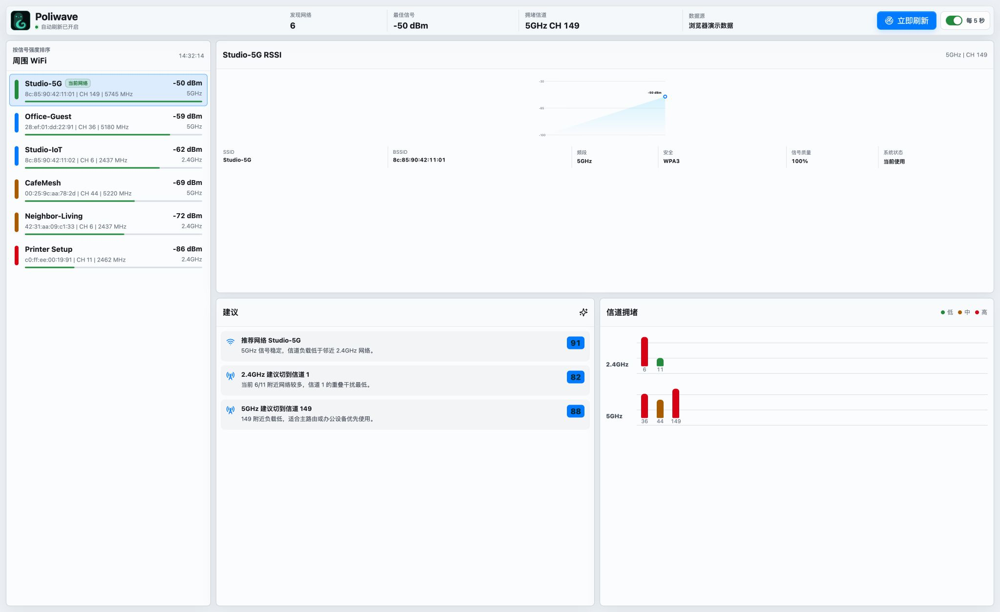

Poliwave
把看不见的无线信号变成看得懂的连接状态。
一屏看清你的无线环境
截图来自应用内置 Demo 模式的真实渲染，下载后看到的就是这个界面。

八件事，把无线环境讲清楚
-
实时扫描一键巡视周围的电波
调用系统原生能力扫描周围网络，可选每 5 秒自动刷新。不装驱动，不要管理员权限，系统能看到的网络会直接列在窗口中。
-
信号排序最强的信号排在最前面
网络按 RSSI 降序排列，SSID、BSSID、信道、频率、频段、安全类型一行看全，当前连接的 BSSID 会单独标出。
-
周边网络分布看清网络集中在哪些信道
按 2.4GHz、5GHz、6GHz 分组展示每个信道扫描到的 WiFi 数量。它用于观察周边分布，不把扫描数量解释成实际信道负载。
-
RSSI 历史曲线记下信号的每一次起伏
前端按 BSSID 持续记录信号历史，为选中网络绘制 SVG 曲线。走到哪里信号开始衰减、哪个时段开始抖动，曲线替你记着。
-
连接状态只分析当前正在使用的网络
根据信号强度和安全类型显示最多两项状态。应用不会替你推荐陌生网络，也不会把无法执行的信道设置写成操作建议。
-
一键连接诊断从 WiFi 一路检查到互联网
逐层检查当前 WiFi、默认网关、DNS 与互联网可达性，并在系统允许时显示延迟和丢包率；Ping 被屏蔽时会回退到 TCP 检查。
-
异常恢复向导知道为什么失败，也知道下一步
区分定位权限、WiFi 关闭、无线网卡不可用和普通扫描失败，给出对应恢复步骤，并可直接打开相关系统设置后重试。
-
系统设置入口需要切换时交给系统完成
未连接 WiFi 或当前网络安全性较低时，可直接打开 macOS、Windows 的 WiFi 设置。应用不接管密码和连接流程，关窗后仍可在系统托盘中唤回。
五条底线，写在代码里
-
01
数据不出设备 扫描结果只活在内存里，没有遥测和统计埋点。只有主动运行诊断时才发起标准连通性探测，不上传扫描结果或用户内容。
-
02
规则可解释 状态来自固定信号阈值、安全类型和逐层网络探测，不是 AI 黑盒。每项结论都能回到当前连接的数据。
-
03
借系统的眼睛 扫描使用 CoreWLAN 或系统命令；需要切换网络时打开系统 WiFi 设置，不绕过系统权限模型。
-
04
轻得像个仪表 Tauri 2 外壳复用系统 WebView，不捆绑浏览器内核；前端零框架，图表是手写 SVG。
-
05
开源可审计 MIT 许可证，全部源码公开在 GitHub。上面四条不必信宣传，可以亲自读代码验证。
免费，而且不带星号
¥0
没有订阅、没有内购、没有广告。MIT 许可证下自由使用、修改与分发，没有付费版，也没有功能阉割。
前往 GitHub 下载源码、构建脚本与发布产物都在 GitHub 仓库公开。
支持 macOS / Windows · Windows 构建未签名，首次运行可能出现 SmartScreen 提示
下载之前，你大概想问
- 和系统自带的 WiFi 列表有什么不同？
- 系统列表主要用于连接网络；Poliwave 补充展示 BSSID、信道、频率、RSSI 曲线、周边网络分布，并可逐层诊断当前连接。
- 连接状态是 AI 生成的吗？
- 不是。状态使用本机读取的信号、安全类型和标准网络探测，不调用任何模型或诊断 API。
- 我的扫描数据会上传吗？
- 不会。扫描结果只保存在内存中。只有主动运行一键诊断时，应用才会向公开检测目标发起 DNS、ICMP 或 TCP 探测，不上传扫描结果或用户内容。
- 它怎么拿到 WiFi 信息？
- macOS 优先使用 CoreWLAN，兼容扫描会使用系统工具；Windows 使用
netsh。 - 支持哪些系统？
- 当前支持 macOS 和 Windows，发布页提供对应安装包。
- 免费吗？
- 免费且开源，MIT 许可证。没有试用期，也没有解锁付费功能的弹窗。
- Windows 提示"未知发布者"怎么办？
- 当前构建未签名，SmartScreen 提示属正常现象；选择"仍要运行"即可，介意的话也可以从源码自行构建。
- 用浏览器打开会怎样？
- 在非 Tauri 环境下应用自动进入 Demo 模式，用内置演示数据渲染完整界面。本页截图正是这样生成的。
更多问题？欢迎到 GitHub Issues 提问。